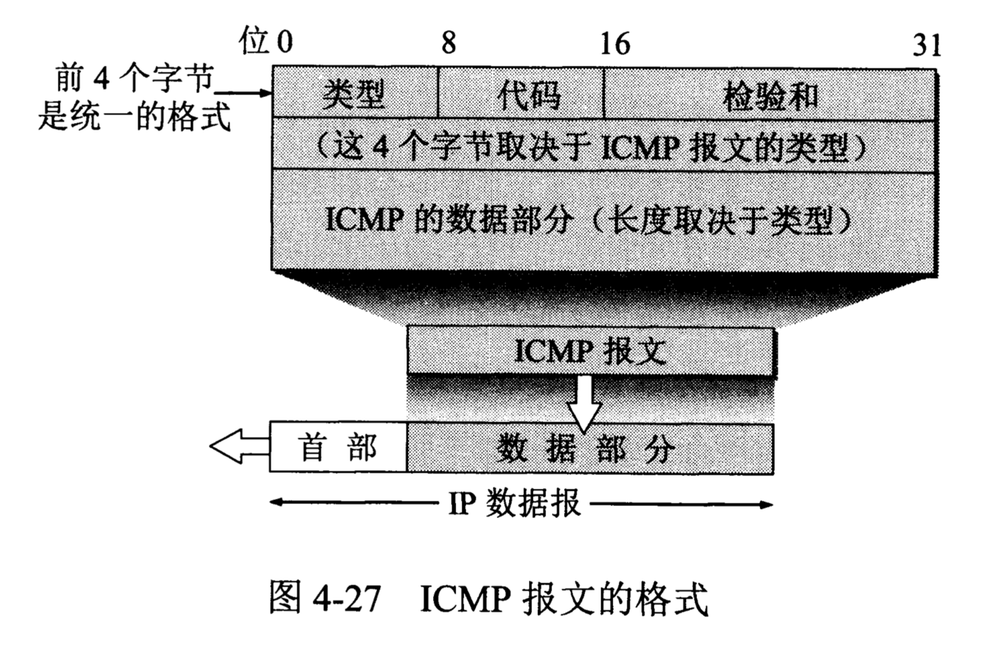

计算机网络/网络层/网际控制报文协议ICMP 为了更有效地转发IP数据报和提高交付成功的机会，在网际层使用了网际控制报文协议ICMP(Internet Control Message Protocol)。ICMP允许主机或路由器报告差错情况和提供有关异常情况的报告。ICMP是IP层的协议。ICMP报文作为IP数据报的数据，加上数据报的首部，组成IP数据报发送出去。 # ICMP报文

ICMP报文种类
ICMP报文的种类有两种，即ICMP差错报文和ICMP询问报文。 ICMP差错报文共有四种： 1. 终点不可达。当路由器或主机不能交付数据报时就向源点发送终点不可达报文。 2. 时间超过。当路由器收到生存时间为零的数据报时，除丢弃该数据报外，还要向源点发送时间超过报文。当终点在预先规定的时间内不能收到一个数据报的全部数据报片时，就把已收到的数据报片丢弃，并向源点发送时间超过报文。 3. 参数问题。当路由器或目的主机收到的数据报的首部中有的字段的值不正确时，就丢弃该数据报，并向源点发送参数问题报文。 4. 改变路由（重定向）。路由器把改变路由报文发送给主机，让主机知道下次应将数据报发送给另外的路由器（可通过更好的路由）。
常用的ICMP询问报文有两种： 1. 回送请求和回答。ICMP回送请求报文是由报文或路由器向一个特定的目的主机发出的询问。收到此报文的主机必须给源主机或路由器发送ICMP回送回答报文。这种询问报文用来测试目的站是否可达以及了解其有关状态。 2. 时间戳请求和回答。ICMP时间戳请求报文是请某台主机或路由器回答当前的日期和时间。在ICMP时间戳回答报文中有一个32位的字段，其中写入的整数代表从1900年1月1日起到当前时刻一共有多少秒。时间戳请求与回答可用于时钟同步和时间测量。
ICMP应用举例
分组网间探测PING
ICMP的一个重要应用就是分组网间探测PING(Packet InterNet Groper)，用来测试两台主机之间的连通性。PING使用了ICMP回送请求与回送回答报文。PING是应用层直接使用网络层ICMP的一个例子。它没有通过运输层的TCP或UDP。 ## traceroute 另一个非常有用的应用是traceroute（这是UNIX操作系统中的名字），它用来跟踪一个分组从源点到终点的路径。在Windows操作系统中这个命令是tracert。 Traceroute从源主机向目的主机发送一连串的IP数据报，数据报中封装的是无法交付的UDP用户数据报。第一个数据报P1的生存时间TTL设置为1.当P1到达路径上的第一个路由器R1时，R1先收下它，接着把TLL减1.由于TTL等于零了，R1就把P1丢弃了，并向源主机发送一个ICMP时间超过差错报告报文。 源主机接着发送第二个数据报P2，并把TTL设置成2。这样一直继续下去。当最后一个数据报刚刚到达目的主机时，数据报的TTL是1。主机不转发数据报，也不把TTL值减1。但因IP数据报中封装的是无法交付的运输层的UDP用户数据报，因此目的主机要向源主机发送ICMP终点不可达差错报告报文。 这样，源主机达到了自己的目的，因为这些路由器和最后目的主机发来的ICMP报文正好给出了源主机想知道的路由信息————到达目的主机所经过的路由器的IP地址。
参考文献：《计算机网络（第7版）》谢希仁著。